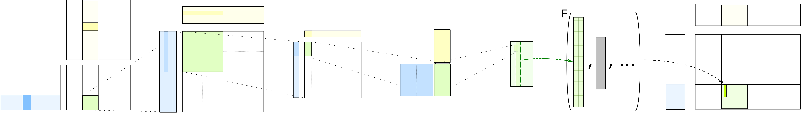

CUTLASS Code Organization#
This document describes the layout of the CUTLASS repository. The main components are:
CUTLASS Template Library - CUDA Templates for Linear Algebra Subroutines and Solvers (header only)
CuTe Template Library - CUTLASS’s core vocabulary layout type and associated algebra (header only)
CUTLASS Utilities - Additional templates
CUTLASS Instance Library - instantiations of CUTLASS templates covering the design space
CUTLASS Profiler - CUTLASS Library, Profiler, and Utilities
Examples - SDK examples of CUTLASS Template Library and components
Media - supporting documentation and media content
Tests - test components for CUTLASS Template Library and tools
CUTLASS Template Library#
CUDA Templates for Linear Algebra Subroutines and Solvers is a library of CUDA C++ template classes for performing efficient matrix computations on NVIDIA GPUs.
Like NVIDIA CUB, the components of CUTLASS are organized hierarchically based on the scope of cooperative elements. For example, warp-level GEMM components perform a matrix multiply collectively by the set of threads within a warp. The following figure illustrates each layer.
Components are designed to be usable by client applications accessing functionailty at each scope.
CUTLASS Templates are implemented by header files in the following directory structure:
include/ # Top-level include directory. Client applications should target this path.
cutlass/ # CUDA Templates for Linear Algebra Subroutines and Solvers - headers only
arch/ # direct exposure of architecture features (including instruction-level GEMMs)
*
gemm/ # code specialized for general matrix product computations
thread/ # thread-level operators
warp/ # warp-level operators
collective/ # 3.x API operators for all threads a tiled mma/copy are built over
threadblock/ # CTA-level operators
kernel/ # CUDA kernel entry points
device/ # launches kernel(s) over a full device
* # scope-agnostic components and basic vocabulary type definitions for GEMM
layout/ # layout definitions for matrices, tensors, and other mathematical objects in memory
*
reduction/ # bandwidth-limited reduction kernels that do not fit the "gemm" models
thread/ # thread-level operators
warp/ # warp-level operators
threadblock/ # CTA-level operators
kernel/ # CUDA kernel entry points
device/ # launches kernel(s) over a full device
* # scope-agnostic components and basic vocabulary type definitions
transform/ # code specialized for layout, type, and domain transformations
thread/ # thread-level operators
warp/ # warp-level operators
threadblock/ # CTA-level operators
kernel/ # CUDA kernel entry points
device/ # launches kernel(s) over a full device
* # scope-agnostic components and basic vocabulary type definitions
util/ # miscellaneous CUTLASS components
*
* # core vocabulary types and fundamental arithmetic operators
cute / # CuTe Layout, layout algebra, MMA/Copy atoms, tiled MMA/Copy
algorithm/ # Definitions of core operations such as copy, gemm, and operations on cute::tuples
arch/ # Bare bones PTX wrapper structs for copy and math instructions
atom/ # Meta-information either link to or built from arch/ operators
mma_atom.hpp # cute::Mma_Atom and cute::TiledMma
copy_atom.hpp # cute::Copy_Atom and cute::TiledCopy
*sm*.hpp # Arch specific meta-information for copy and math operations
container/ # Core container types used across CuTe, namely, cute::tuple
numeric/ # CuTe's internal numerics implementation
* # Core library types such as Shape, Stride, Layout, Tensor, and associated operations
See Programming Guidelines for further details about conventions and design patterns used throughout CUTLASS.
CuTe#
CuTe is a collection of C++ CUDA template abstractions for defining and operating on hierarchically multidimensional layouts of threads and data. CuTe provides Layout and Tensor objects that compactly packages the type, shape, memory space, and layout of data, while performing the complicated indexing for the user. This lets programmers focus on the logical descriptions of their algorithms while CuTe does the mechanical bookkeeping for them. With these tools, we can quickly design, implement, and modify all dense linear algebra operations. More documentation
for CuTe can be found in cute/.
Tools#
The tools/ directory contains clients of the CUTLASS Template library and includes the following.
CUTLASS Instance Library#
The CUTLASS Instance Library contains instantiations of the above CUTLASS templates covering supported configurations, data types, block structure, and tile sizes. These instantiations are procedurally generated using a set of scripts to span the design space.
tools/
library/ # static/dynamic library containing all kernel instantiations of interest
# (with some build-level filter switches to compile specific subsets)
include/
cutlass/
library/ # header files for CUTLASS Deliverables Library (in cutlass::library:: namespace)
handle.h # implements a host-side API for launching kernels, similar to cuBLAS
library.h # defines enums and structs to describe the tiled structure of operator instances
manifest.h # collection of all instances
src/
python/
cutlass_library/ # scripts to procedurally generate CUTLASS template instances
gemm_operations.py
library.py
generator.py # entry point of procedural generation scripts - invoked by cmake
manifest.py
When CMake is executed, the CUTLASS Instance Library generator scripts are executed to construct a set of
instantiations in build/tools/library/generated/.
CUTLASS Profiler#
The CUTLASS Profiler is designed to load the CUTLASS Instance Library and execute all operations contained therein. This command-line driven application constructs an execution environment for evaluating functionality and performance. It is implemented in
tools/
profiler/
and may be built as follows.
$ make cutlass_profiler -j
Further details about the CUTLASS Profiler are described here.
CUTLASS Utilities#
tools/util/ defines a companion library of headers and sources that support the CUTLASS test programs, examples, and other client applications. Its structure is as follows:
tools/
util/
include/
cutlass/
util/ # CUTLASS Utility companion library
reference/ # functional reference implementation of CUTLASS operators
# (minimal consideration for performance)
detail/
*
device/ # device-side reference implementations of CUTLASS operators
thread/
kernel/
*
host/ # host-side reference implementations of CUTLASS operators
*
*
Examples#
To demonstrate CUTLASS components, several SDK examples are implemented in examples/.
CUTLASS SDK examples apply CUTLASS templates to implement basic computations.
examples/
00_basic_gemm/ # launches a basic GEMM with single precision inputs and outputs
01_cutlass_utilities/ # demonstrates CUTLASS Utilities for allocating and initializing tensors
02_dump_reg_smem/ # debugging utilities for printing register and shared memory contents
03_visualize_layout/ # utility for visualizing all layout functions in CUTLASS
04_tile_iterator/ # example demonstrating an iterator over tiles in memory
05_batched_gemm/ # example demonstrating CUTLASS's batched strided GEMM operation
06_splitK_gemm/ # exmaple demonstrating CUTLASS's Split-K parallel reduction kernel
07_volta_tensorop_gemm/ # example demonstrating mixed precision GEMM using Volta Tensor Cores
08_turing_tensorop_gemm/ # example demonstrating integer GEMM using Turing Tensor Cores
10_planar_complex/ # example demonstrating planar complex GEMM kernels
11_planar_complex_array/ # example demonstrating planar complex kernels with batch-specific problem sizes
12_gemm_bias_relu/ # example demonstrating GEMM fused with bias and relu activation function
13_fused_two_gemms/ # example demonstrating two GEMMs fused into one kernel
Media#
This directory contains documentation, images, and performance result data which accompanies the CUTLASS library and components.
Tests#
Test programs for CUTLASS. Tests are organized hierarchically, mirroring the organization of source files.
test/ # unit tests for CUTLASS Template Library
unit/
arch/
core/
gemm/
device/
kernel/
thread/
threadblock/
warp/
reduction/
kernel/
thread/
transform/
threadblock/
*
Tests can be built and run at the top level scope by invoking make test_unit or by building
and explicitly executing each individual target, e.g. cutlass_test_unit_gemm_device.
Tests are configured to specify appropriate GTest filter strings to avoid running except on architectures where they are expected to pass. Thus, no tests should fail. The actual number of tests run may vary over time as more are added.
Copyright#
Copyright (c) 2017 - 2025 NVIDIA CORPORATION & AFFILIATES. All rights reserved. SPDX-License-Identifier: BSD-3-Clause
Redistribution and use in source and binary forms, with or without
modification, are permitted provided that the following conditions are met:
1. Redistributions of source code must retain the above copyright notice, this
list of conditions and the following disclaimer.
2. Redistributions in binary form must reproduce the above copyright notice,
this list of conditions and the following disclaimer in the documentation
and/or other materials provided with the distribution.
3. Neither the name of the copyright holder nor the names of its
contributors may be used to endorse or promote products derived from
this software without specific prior written permission.
THIS SOFTWARE IS PROVIDED BY THE COPYRIGHT HOLDERS AND CONTRIBUTORS "AS IS"
AND ANY EXPRESS OR IMPLIED WARRANTIES, INCLUDING, BUT NOT LIMITED TO, THE
IMPLIED WARRANTIES OF MERCHANTABILITY AND FITNESS FOR A PARTICULAR PURPOSE ARE
DISCLAIMED. IN NO EVENT SHALL THE COPYRIGHT HOLDER OR CONTRIBUTORS BE LIABLE
FOR ANY DIRECT, INDIRECT, INCIDENTAL, SPECIAL, EXEMPLARY, OR CONSEQUENTIAL
DAMAGES (INCLUDING, BUT NOT LIMITED TO, PROCUREMENT OF SUBSTITUTE GOODS OR
SERVICES; LOSS OF USE, DATA, OR PROFITS; OR BUSINESS INTERRUPTION) HOWEVER
CAUSED AND ON ANY THEORY OF LIABILITY, WHETHER IN CONTRACT, STRICT LIABILITY,
OR TORT (INCLUDING NEGLIGENCE OR OTHERWISE) ARISING IN ANY WAY OUT OF THE USE
OF THIS SOFTWARE, EVEN IF ADVISED OF THE POSSIBILITY OF SUCH DAMAGE.